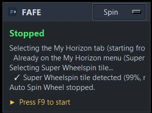

Game Overlay
What the overlay is
A small card that floats over the game showing the current status, the last 5 log lines, and the key to stop.

Turn it on
Press F10, click the ●/○ indicator in the top bar (right of the monitor picker), or use Settings → Appearance. All three stay in sync.
Move it
Drag anywhere on the card to reposition it (it's not click-through, so park it away from areas the tool needs to detect or click). Its position is remembered.
Switch function
Use the dropdown next to "FAFE" in the overlay header to switch which tab runs — without leaving the game. (Changing the loop count still has to be done in the app itself for now.)
Rebind the hotkey
Change the overlay hotkey in Settings (default F10).
What it's mainly for
It mainly lets single-monitor users watch where a run goes wrong. During AFK Races, if it detects the "restart menu" (the post-race results screen) before the race finishes, that means it's triggering too early.